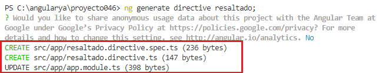
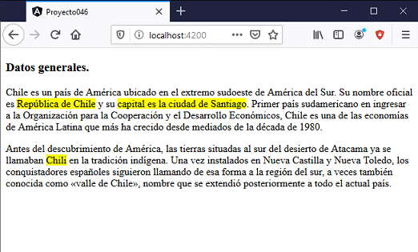

Hemos dicho que una directiva de atributo cambia la apariencia o el comportamiento de un elemento HTML. Hay varias directivas que trae Angular por defecto. Ahora veremos que podemos crear nuestras propias directivas de atributo personalizadas y definir el algoritmo que se debe aplicar al elemento HTML que se le asigna.
La herramienta de Angular CLI provee lo necesario para crear un esqueleto básico de una directiva de atributo. Debemos utilizar la siguiente sintaxis:
ng generate directive [nombre de la directiva]
Confeccionaremos un problema elemental para conocer los pasos en la creación, codificación y uso de una directiva de atributo personalizada.
Crear una directiva personalizada que se pueda asociar a cualquier elemento HTML y cuyo objetivo sea resaltar el texto que muestra, cambiando el color de fondo por amarillo.
Crearemos primero el proyecto
ng new proyecto046
Procedemos a crear la directiva de atributo personalizada llamando a la misma 'resaltado':
ng generate directive resaltado
Se crean dos archivos y se modifica uno:
Por un lado se modifica el archivo 'app.module.ts' haciendo referencia a la clase 'ResaltadoDirective':
import { BrowserModule } from '@angular/platform-browser';
import { NgModule } from '@angular/core';
import { AppComponent } from './app.component';
import { ResaltadoDirective } from './resaltado.directive';
@NgModule({
declarations: [
AppComponent,
ResaltadoDirective
],
imports: [
BrowserModule
],
providers: [],
bootstrap: [AppComponent]
})
export class AppModule { }
Se crea propiamente el archivo que contendrá la lógica de la directiva y tiene como nombre 'resaltado.directive.ts':
import { Directive } from '@angular/core';
@Directive({
selector: '[appResaltado]'
})
export class ResaltadoDirective {
constructor() { }
}
También se crea el archivo 'resaltado.directive.spec.ts' para especificar pruebas unitarias (por el momento no hemos trabajado con este tipo de archivos, no lo modificaremos ni analizaremos):
import { ResaltadoDirective } from './resaltado.directive';
describe('ResaltadoDirective', () => {
it('should create an instance', () => {
const directive = new ResaltadoDirective();
expect(directive).toBeTruthy();
});
});
Procedemos a modificar el archivo 'resaltado.directive.ts' implementando la lógica de nuestra directiva:
import { Directive, ElementRef } from '@angular/core';
@Directive({
selector: '[appResaltado]'
})
export class ResaltadoDirective {
constructor(private elemento: ElementRef) {
elemento.nativeElement.style.backgroundColor = 'yellow';
}
}
Se inyecta al constructor un objeto de la clase 'ElementRef':
constructor(private elemento: ElementRef) {
Previamente debemos importar la clase 'ElementRef', que se almacena en '@angular/core':
import { Directive, ElementRef } from '@angular/core';
La lógica de nuestra directiva es muy simple, solo debe manipular el color de fondo del elemento HTML al que se le aplicó.
El parámetro 'elemento' tiene la referencia al elemento HTML que se le aplicó la directiva, mediante el método 'nativeElement' podemos acceder a los atributos y métodos del DOM.
Solo nos falta consumir la directiva de atributo en la interfaz visual de una componente. Pasemos a modificar el archivo 'app.component.html' por:
<h3>Datos generales.</h3> <p>Chile es un país de América ubicado en el extremo sudoeste de América del Sur. Su nombre oficial es <span appResaltado>República de Chile</span> y su <span appResaltado>capital es la ciudad de Santiago</span>. Primer país sudamericano en ingresar a la Organización para la Cooperación y el Desarrollo Económicos, Chile es una de las economías de América Latina que más ha crecido desde mediados de la década de 1980.</p> <p>Antes del descubrimiento de América, las tierras situadas al sur del desierto de Atacama ya se llamaban <span appResaltado>Chili</span> en la tradición indígena. Una vez instalados en Nueva Castilla y Nueva Toledo, los conquistadores españoles siguieron llamando de esa forma a la región del sur, a veces también conocida como «valle de Chile», nombre que se extendió posteriormente a todo el actual país.</p>
Cuando queremos resaltar un texto, podemos utilizar el elemento 'span' y asignar la directiva 'appResaltado'.
Tenemos como resultado en el navegador:
Podemos probar esta aplicación en la web aquí.
Podemos aplicar la directiva creada a cualquier otro elemento HTML:
<h1 appResaltado>Estado de resultados</h1> <p appResaltado>Esto es una prueba.</p>
Si queremos que la directiva tenga un prefijo distinto a 'app' cuando se crea, debemos utilizar la sintaxis:
ng generate directive resaltado --prefix lib
Si queremos que la directiva no tenga prefijo cuando se crea, debemos utilizar la sintaxis:
ng generate directive resaltado --prefix